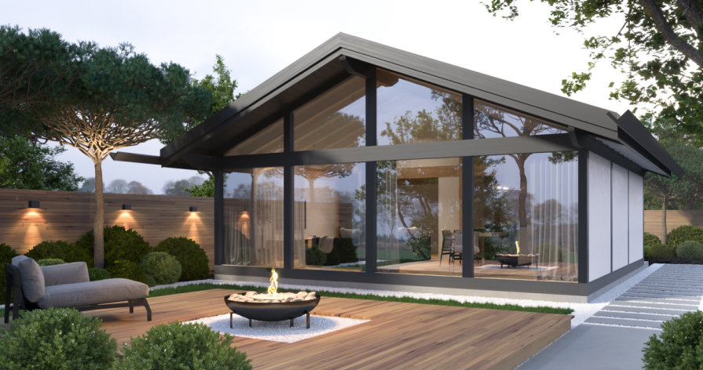
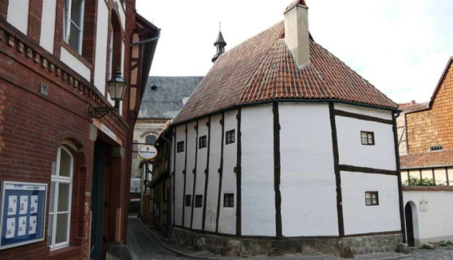

Фахверковый дом: хайп или
альтернатива квартире?
В статье сравниваем цену на квартиру и строительство своего дома. Ищем плюсы и минусы фахверка.
Вспомним как все начиналось...
Мы привыкли думать, будто бы свой дом — хлопотное и дорогое удовольствие. Поэтому при выборе недвижимости чаще останавливаемся на покупке квартиры, в крайнем случае, дачи. Это более привычный и понятный формат жилья. Конечно, есть еще такие факторы, как инфраструктура, транспортная доступность. Но 73% россиян ответили, что не могут позволить себе частный дом только из-за нехватки денег.
Заметили, что в последние 3-4 года в Сети появилось много роликов, в которых авторы рассказывают про фахверковые дома.
Фахверк — строительная конструкция, в которой несущая основа здания это каркас из вертикальных деревянных столбов и балок под наклоном. Балки видны с фасада дома и придают ему характерный вид.
Один из главных популяризаторов фахверка в России Сергей Домогацкий, на своем канале в YouTube сравнивает стоимость квартиры в Балашихе и фахверкового дома его строительной компании.
Получается, что фахверковый дом построить выгоднее, чем купить трехкомнатную квартиру?
Фахверк появился в 14 веке в Германии и быстро стал популярен в Европе из-за своей дешевизны и прочности. Если были в странах северной Европы, то, наверняка, помните их уютные 2-3 этажные дома с балками и черепичными крышами. Будто бы из сказок Андерсена и Братьев Гримм. Это и есть классический фахверк.
Самый старый из фахверков Германии находится в Кведлинбурге. По одним данным дендрохронологии, этот дом построен из дерева, срубленного в 1310-х годах, по другим — в 1346 - 49-х. Внутри — музей фахверка.
В России фахверк не смог бы прижиться, если бы не современные технологии строительства. Теперь можно утеплить конструкцию дома так, чтобы даже в январские морозы было не холодно ходить по полу босиком. Ставишь тройные стеклопакеты, CLT панели, сэндвич-панели, щиты, утепляешь пол.
Короче говоря, строители адаптировали старинную технологию под современные реалии и российский климат.
Чем хорош фахверк?
- Он прочный. В процессе строительства все детали соединяются между собой и создают единую конструкцию, способную простоять десятки лет. В Германии есть фахверковые дома, которым 400 лет.
- Много естественного света. Площадь остекления у фахверка иногда достигает 75% площади поверхности стен. Получится, что одна стена полностью прозрачная. А представьте, если эта стена выходит на опушку леса...
- Быстро строить. По типовому проекту бригада строителей соберет фахверковый дом за 2-3 месяца в любое время года.
- Для строительства не нужно много рабочих и тяжелая техника.
- Усадка 1%. К отделке фасадов и помещений можно приступать сразу после сборки конструкции.
- Экологичный. Обычно фахверковые дома строят из клееного бруса. Он расходуется в меньшем объеме, чем цельная древесина, да и самого дерева на строительство уходит меньше.
Минусы фахверка
Есть первый очевидный — для строительства дома нужен свой участок. Второй минус, по мнению экспертов Домогацкого и основателя GOOD WOOD Александра Дубовенко, высокие затраты на отопление, если вы решите построить такой дом, ну скажем, в Якутске. Поэтому фахверк популярен в регионах с более теплым климатом.
Выходит, что ютубный ажиотаж насчет фахверка — не пустой хайп, а реальная альтернатива квартире. Возможность жить в просторном доме на природе, не потратив при этом бешеных миллионов.
Посмотрим, как будет распространяться фахверк в России и будет ли вообще.
P.S.: Один из наших менеджеров, уже после публикации статьи, всерьез задумался о продаже квартиры в Москве и переезде в фахверковый дом. Мы меняем судьбы людей! :)

Термин фахверк (Fachwerk) произошел от слов Fach (секция или панель) и Werk (сооружение). Принято считать, что стиль зародился в XV веке.

Фахверковые дома, как старинной, так и современной постройки, можно видеть во многих странах — в Германии, Австрии, Швейцарии, Франции, Нидерландах, Чехии и др.

{kind=link}
{kind=link}
{kind=link}
{kind=link}
{kind=link}